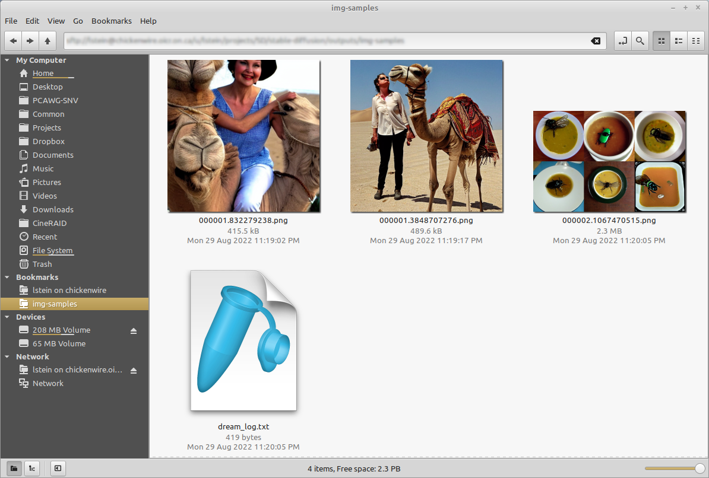

CLI#
Interactive Command Line Interface#
The InvokeAI command line interface (CLI) provides scriptable access to InvokeAI's features.Some advanced features are only available through the CLI, though they eventually find their way into the WebUI.
The CLI is accessible from the invoke.sh/invoke.bat launcher by
selecting option (1). Alternatively, it can be launched directly from
the command line by activating the InvokeAI environment and giving the
command:
After some startup messages, you will be presented with the invoke>
prompt. Here you can type prompts to generate images and issue other
commands to load and manipulate generative models. The CLI has a large
number of command-line options that control its behavior. To get a
concise summary of the options, call invokeai with the --help argument:
The script uses the readline library to allow for in-line editing, command history (Up and Down), autocompletion, and more. To help keep track of which prompts generated which images, the script writes a log file of image names and prompts to the selected output directory.
Here is a typical session
PS1:C:\Users\fred> invokeai
* Initializing, be patient...
* Initializing, be patient...
>> Initialization file /home/lstein/invokeai/invokeai.init found. Loading...
>> Internet connectivity is True
>> InvokeAI, version 2.3.0-rc5
>> InvokeAI runtime directory is "/home/lstein/invokeai"
>> GFPGAN Initialized
>> CodeFormer Initialized
>> ESRGAN Initialized
>> Using device_type cuda
>> xformers memory-efficient attention is available and enabled
(...more initialization messages...)
* Initialization done! Awaiting your command (-h for help, 'q' to quit)
invoke> ashley judd riding a camel -n2 -s150
Outputs:
outputs/img-samples/00009.png: "ashley judd riding a camel" -n2 -s150 -S 416354203
outputs/img-samples/00010.png: "ashley judd riding a camel" -n2 -s150 -S 1362479620
invoke> "there's a fly in my soup" -n6 -g
outputs/img-samples/00011.png: "there's a fly in my soup" -n6 -g -S 2685670268
seeds for individual rows: [2685670268, 1216708065, 2335773498, 822223658, 714542046, 3395302430]
invoke> q

Arguments#
The script recognizes a series of command-line switches that will change important global defaults, such as the directory for image outputs and the location of the model weight files.
List of arguments recognized at the command line#
These command-line arguments can be passed to invoke.py when you first run it
from the Windows, Mac or Linux command line. Some set defaults that can be
overridden on a per-prompt basis (see
List of prompt arguments. Others
| Argument |
Shortcut |
Default |
Description |
|---|---|---|---|
--help |
-h |
Print a concise help message. | |
--outdir <path> |
-o<path> |
outputs/img_samples |
Location for generated images. |
--prompt_as_dir |
-p |
False |
Name output directories using the prompt text. |
--from_file <path> |
None |
Read list of prompts from a file. Use - to read from standard input |
|
--model <modelname> |
stable-diffusion-1.5 |
Loads the initial model specified in configs/models.yaml. | |
--ckpt_convert |
False |
If provided both .ckpt and .safetensors files will be auto-converted into diffusers format in memory | |
--autoconvert <path> |
None |
On startup, scan the indicated directory for new .ckpt/.safetensor files and automatically convert and import them | |
--precision |
fp16 |
Provide fp32 for full precision mode, fp16 for half-precision. fp32 needed for Macintoshes and some NVidia cards. |
|
--png_compression <0-9> |
-z<0-9> |
6 |
Select level of compression for output files, from 0 (no compression) to 9 (max compression) |
--safety-checker |
False |
Activate safety checker for NSFW and other potentially disturbing imagery | |
--patchmatch, --no-patchmatch |
--patchmatch |
Load/Don't load the PatchMatch inpainting extension | |
--xformers, --no-xformers |
--xformers |
Load/Don't load the Xformers memory-efficient attention module (CUDA only) | |
--web |
False |
Start in web server mode | |
--host <ip addr> |
localhost |
Which network interface web server should listen on. Set to 0.0.0.0 to listen on any. | |
--port <port> |
9090 |
Which port web server should listen for requests on. | |
--config <path> |
configs/models.yaml |
Configuration file for models and their weights. | |
--iterations <int> |
-n<int> |
1 |
How many images to generate per prompt. |
--width <int> |
-W<int> |
512 |
Width of generated image |
--height <int> |
-H<int> |
512 |
Height of generated image |
--strength <float> |
-s<float> |
0.75 |
For img2img: how hard to try to match the prompt to the initial image. Ranges from 0.0-0.99, with higher values replacing the initial image completely. |
--fit |
-F |
False |
For img2img: scale the init image to fit into the specified -H and -W dimensions |
--grid |
-g |
False |
Save all image series as a grid rather than individually. |
--sampler <sampler> |
-A<sampler> |
k_lms |
Sampler to use. Use -h to get list of available samplers. |
--seamless |
False |
Create interesting effects by tiling elements of the image. | |
--embedding_path <path> |
None |
Path to pre-trained embedding manager checkpoints, for custom models | |
--gfpgan_model_path |
experiments/pretrained_models/GFPGANv1.4.pth |
Path to GFPGAN model file. | |
--free_gpu_mem |
False |
Free GPU memory after sampling, to allow image decoding and saving in low VRAM conditions | |
--precision |
auto |
Set model precision, default is selected by device. Options: auto, float32, float16, autocast |
These arguments are deprecated but still work
| Argument | Shortcut | Default | Description |
|---|---|---|---|
--full_precision |
False |
Same as --precision=fp32 |
|
--weights <path> |
None |
Path to weights file; use --model stable-diffusion-1.4 instead |
|
--laion400m |
-l |
False |
Use older LAION400m weights; use --model=laion400m instead |
Tip
On Windows systems, you may run into
problems when passing the invoke script standard backslashed path
names because the Python interpreter treats "\" as an escape.
You can either double your slashes (ick): C:\\path\\to\\my\\file, or
use Linux/Mac style forward slashes (better): C:/path/to/my/file.
The .invokeai initialization file#
To start up invoke.py with your preferred settings, place your desired
startup options in a file in your home directory named .invokeai The
file should contain the startup options as you would type them on the
command line (--steps=10 --grid), one argument per line, or a
mixture of both using any of the accepted command switch formats:
my unmodified initialization file
Note
The initialization file only accepts the command line arguments.
There are additional arguments that you can provide on the invoke> command
line (such as -n or --iterations) that cannot be entered into this file.
Also be alert for empty blank lines at the end of the file, which will cause
an arguments error at startup time.
List of prompt arguments#
After the invoke.py script initializes, it will present you with a invoke>
prompt. Here you can enter information to generate images from text
(txt2img), to embellish an existing image or sketch
(img2img), or to selectively alter chosen regions of the image
(inpainting).
txt2img#
This will create the requested image with the dimensions 640 (width) and 480 (height).
Here are the invoke> command that apply to txt2img:
| Argument |
Shortcut |
Default |
Description |
|---|---|---|---|
| "my prompt" | Text prompt to use. The quotation marks are optional. | ||
--width <int> |
-W<int> |
512 |
Width of generated image |
--height <int> |
-H<int> |
512 |
Height of generated image |
--iterations <int> |
-n<int> |
1 |
How many images to generate from this prompt |
--steps <int> |
-s<int> |
50 |
How many steps of refinement to apply |
--cfg_scale <float> |
-C<float> |
7.5 |
How hard to try to match the prompt to the generated image; any number greater than 1.0 works, but the useful range is roughly 5.0 to 20.0 |
--seed <int> |
-S<int> |
None |
Set the random seed for the next series of images. This can be used to recreate an image generated previously. |
--sampler <sampler> |
-A<sampler> |
k_lms |
Sampler to use. Use -h to get list of available samplers. |
--karras_max <int> |
29 |
When using k_* samplers, set the maximum number of steps before shifting from using the Karras noise schedule (good for low step counts) to the LatentDiffusion noise schedule (good for high step counts) This value is sticky. [29] | |
--hires_fix |
Larger images often have duplication artefacts. This option suppresses duplicates by generating the image at low res, and then using img2img to increase the resolution | ||
--png_compression <0-9> |
-z<0-9> |
6 |
Select level of compression for output files, from 0 (no compression) to 9 (max compression) |
--grid |
-g |
False |
Turn on grid mode to return a single image combining all the images generated by this prompt |
--individual |
-i |
True |
Turn off grid mode (deprecated; leave off --grid instead) |
--outdir <path> |
-o<path> |
outputs/img_samples |
Temporarily change the location of these images |
--seamless |
False |
Activate seamless tiling for interesting effects | |
--seamless_axes |
x,y |
Specify which axes to use circular convolution on. | |
--log_tokenization |
-t |
False |
Display a color-coded list of the parsed tokens derived from the prompt |
--skip_normalization |
-x |
False |
Weighted subprompts will not be normalized. See Weighted Prompts |
--upscale <int> <float> |
-U <int> <float> |
-U 1 0.75 |
Upscale image by magnification factor (2, 4), and set strength of upscaling (0.0-1.0). If strength not set, will default to 0.75. |
--facetool_strength <float> |
-G <float> |
-G0 |
Fix faces (defaults to using the GFPGAN algorithm); argument indicates how hard the algorithm should try (0.0-1.0) |
--facetool <name> |
-ft <name> |
-ft gfpgan |
Select face restoration algorithm to use: gfpgan, codeformer |
--codeformer_fidelity |
-cf <float> |
0.75 |
Used along with CodeFormer. Takes values between 0 and 1. 0 produces high quality but low accuracy. 1 produces high accuracy but low quality |
--save_original |
-save_orig |
False |
When upscaling or fixing faces, this will cause the original image to be saved rather than replaced. |
--variation <float> |
-v<float> |
0.0 |
Add a bit of noise (0.0=none, 1.0=high) to the image in order to generate a series of variations. Usually used in combination with -S<seed> and -n<int> to generate a series a riffs on a starting image. See Variations. |
--with_variations <pattern> |
None |
Combine two or more variations. See Variations for now to use this. | |
--save_intermediates <n> |
None |
Save the image from every nth step into an "intermediates" folder inside the output directory |
Note
the width and height of the image must be multiples of 64. You can provide different values, but they will be rounded down to the nearest multiple of 64.
This will modify the indicated vacation photograph by making it more like the prompt. Results will vary greatly depending on what is in the image. We also ask to --fit the image into a box no bigger than 640x480. Otherwise the image size will be identical to the provided photo and you may run out of memory if it is large.
In addition to the command-line options recognized by txt2img, img2img accepts additional options:
| Argument |
Shortcut | Default | Description |
|---|---|---|---|
--init_img <path> |
-I<path> |
None |
Path to the initialization image |
--fit |
-F |
False |
Scale the image to fit into the specified -H and -W dimensions |
--strength <float> |
-s<float> |
0.75 |
How hard to try to match the prompt to the initial image. Ranges from 0.0-0.99, with higher values replacing the initial image completely. |
inpainting#
This will do the same thing as img2img, but image alterations will
only occur within transparent areas defined by the mask file specified
by -M. You may also supply just a single initial image with the areas
to overpaint made transparent, but you must be careful not to destroy
the pixels underneath when you create the transparent areas. See
Inpainting for details.
inpainting accepts all the arguments used for txt2img and img2img, as well as the --mask (-M) and --text_mask (-tm) arguments:
| Argument |
Shortcut | Default | Description |
|---|---|---|---|
--init_mask <path> |
-M<path> |
None |
Path to an image the same size as the initial_image, with areas for inpainting made transparent. |
--invert_mask |
False | If true, invert the mask so that transparent areas are opaque and vice versa. | |
--text_mask <prompt> [<float>] |
-tm <prompt> [<float>] |
Create a mask from a text prompt describing part of the image |
The mask may either be an image with transparent areas, in which case the inpainting will occur in the transparent areas only, or a black and white image, in which case all black areas will be painted into.
--text_mask (short form -tm) is a way to generate a mask using a text
description of the part of the image to replace. For example, if you have an
image of a breakfast plate with a bagel, toast and scrambled eggs, you can
selectively mask the bagel and replace it with a piece of cake this way:
The algorithm uses clipseg to classify different
regions of the image. The classifier puts out a confidence score for each region
it identifies. Generally regions that score above 0.5 are reliable, but if you
are getting too much or too little masking you can adjust the threshold down (to
get more mask), or up (to get less). In this example, by passing -tm a higher
value, we are insisting on a more stringent classification.
Custom Styles and Subjects#
You can load and use hundreds of community-contributed Textual Inversion models just by typing the appropriate trigger phrase. Please see Concepts Library for more details.
Other Commands#
The CLI offers a number of commands that begin with "!".
Postprocessing images#
To postprocess a file using face restoration or upscaling, use the !fix
command.
!fix#
This command runs a post-processor on a previously-generated image. It takes a
PNG filename or path and applies your choice of the -U, -G, or --embiggen
switches in order to fix faces or upscale. If you provide a filename, the script
will look for it in the current output directory. Otherwise you can provide a
full or partial path to the desired file.
Some examples:
Upscale to 4X its original size and fix faces using codeformer
Use the GFPGAN algorithm to fix faces, then upscale to 3X using --embiggen
invoke> !fix 0000045.4829112.png -G0.8 -ft gfpgan
>> fixing outputs/img-samples/0000045.4829112.png
>> retrieved seed 4829112 and prompt "boy enjoying a banana split"
>> GFPGAN - Restoring Faces for image seed:4829112
Outputs:
[1] outputs/img-samples/000017.4829112.gfpgan-00.png: !fix "outputs/img-samples/0000045.4829112.png" -s 50 -S -W 512 -H 512 -C 7.5 -A k_lms -G 0.8
!mask#
This command takes an image, a text prompt, and uses the clipseg algorithm to
automatically generate a mask of the area that matches the text prompt. It is
useful for debugging the text masking process prior to inpainting with the
--text_mask argument. See [INPAINTING.md] for details.
Model selection and importation#
The CLI allows you to add new models on the fly, as well as to switch among them rapidly without leaving the script. There are several different model formats, each described in the Model Installation Guide.
!models#
This prints out a list of the models defined in `config/models.yaml'. The active model is bold-faced
Example:
inpainting-1.5 not loaded Stable Diffusion inpainting model stable-diffusion-1.5 active Stable Diffusion v1.5 waifu-diffusion not loaded Waifu Diffusion v1.4
!switch <model>#
This quickly switches from one model to another without leaving the CLI script.
invoke.py uses a memory caching system; once a model has been loaded,
switching back and forth is quick. The following example shows this in action.
Note how the second column of the !models table changes to cached after a
model is first loaded, and that the long initialization step is not needed when
loading a cached model.
!import_model <hugging_face_repo_ID>#
This imports and installs a diffusers-style model that is stored on
the HuggingFace Web Site. You can look up
any Stable Diffusion diffusers
model and install it
with a command like the following:
!import_model <path/to/diffusers/directory>#
If you have a copy of a diffusers-style model saved to disk, you can
import it by passing the path to model's top-level directory.
!import_model <url>#
For a .ckpt or .safetensors file, if you have a direct download
URL for the file, you can provide it to !import_model and the file
will be downloaded and installed for you.
!import_model <path/to/model/weights.ckpt>#
This command imports a new model weights file into InvokeAI, makes it available
for image generation within the script, and writes out the configuration for the
model into config/models.yaml for use in subsequent sessions.
Provide !import_model with the path to a weights file ending in .ckpt. If
you type a partial path and press tab, the CLI will autocomplete. Although it
will also autocomplete to .vae files, these are not currenty supported (but
will be soon).
When you hit return, the CLI will prompt you to fill in additional information
about the model, including the short name you wish to use for it with the
!switch command, a brief description of the model, the default image width and
height to use with this model, and the model's configuration file. The latter
three fields are automatically filled with reasonable defaults. In the example
below, the bold-faced text shows what the user typed in with the exception of
the width, height and configuration file paths, which were filled in
automatically.
!import_model <path/to/directory_of_models>#
If you provide the path of a directory that contains one or more
.ckpt or .safetensors files, the CLI will scan the directory and
interactively offer to import the models it finds there. Also see the
--autoconvert command-line option.
!edit_model <name_of_model>#
The !edit_model command can be used to modify a model that is already defined
in config/models.yaml. Call it with the short name of the model you wish to
modify, and it will allow you to modify the model's description, weights and
other fields.
Example:
invoke> !edit_model waifu-diffusion >> Editing model waifu-diffusion from configuration file ./configs/models.yaml description: Waifu diffusion v1.4beta weights: models/ldm/stable-diffusion-v1/model-epoch10-float16.ckpt config: configs/stable-diffusion/v1-inference.yaml width: 512 height: 512 >> New configuration: waifu-diffusion: config: configs/stable-diffusion/v1-inference.yaml description: Waifu diffusion v1.4beta weights: models/ldm/stable-diffusion-v1/model-epoch10-float16.ckpt height: 512 width: 512 OK to import [n]? y >> Caching model stable-diffusion-1.4 in system RAM >> Loading waifu-diffusion from models/ldm/stable-diffusion-v1/model-epoch10-float16.ckpt ...
History processing#
The CLI provides a series of convenient commands for reviewing previous actions, retrieving them, modifying them, and re-running them.
!history#
The invoke script keeps track of all the commands you issue during a session, allowing you to re-run them. On Mac and Linux systems, it also writes the command-line history out to disk, giving you access to the most recent 1000 commands issued.
The !history command will return a numbered list of all the commands issued
during the session (Windows), or the most recent 1000 commands (Mac|Linux). You
can then repeat a command by using the command !NNN, where "NNN" is the
history line number. For example:
invoke> !history
...
[14] happy woman sitting under tree wearing broad hat and flowing garment
[15] beautiful woman sitting under tree wearing broad hat and flowing garment
[18] beautiful woman sitting under tree wearing broad hat and flowing garment -v0.2 -n6
[20] watercolor of beautiful woman sitting under tree wearing broad hat and flowing garment -v0.2 -n6 -S2878767194
[21] surrealist painting of beautiful woman sitting under tree wearing broad hat and flowing garment -v0.2 -n6 -S2878767194
...
invoke> !20
invoke> watercolor of beautiful woman sitting under tree wearing broad hat and flowing garment -v0.2 -n6 -S2878767194
!fetch#
This command retrieves the generation parameters from a previously generated image and either loads them into the command line (Linux|Mac), or prints them out in a comment for copy-and-paste (Windows). You may provide either the name of a file in the current output directory, or a full file path. Specify path to a folder with image png files, and wildcard *.png to retrieve the dream command used to generate the images, and save them to a file commands.txt for further processing.
load the generation command for a single png file
fetch the generation commands from a batch of files and store them into selected.txt
!replay#
This command replays a text file generated by !fetch or created manually
Note
These commands may behave unexpectedly if given a PNG file that was not generated by InvokeAI.
!search <search string>#
This is similar to !history but it only returns lines that contain
search string. For example:
invoke> !search surreal
[21] surrealist painting of beautiful woman sitting under tree wearing broad hat and flowing garment -v0.2 -n6 -S2878767194
!clear#
This clears the search history from memory and disk. Be advised that this operation is irreversible and does not issue any warnings!
Command-line editing and completion#
The command-line offers convenient history tracking, editing, and command completion.
- To scroll through previous commands and potentially edit/reuse them, use the Up and Down keys.
- To edit the current command, use the Left and Right keys to position the cursor, and then Backspace, Del or insert characters.
- To move to the very beginning of the command, type Ctrl+A (or Cmd+A on the Mac)
- To move to the end of the command, type Ctrl+E.
- To cut a section of the command, position the cursor where you want to start cutting and type Ctrl+K
- To paste a cut section back in, position the cursor where you want to paste, and type Ctrl+Y
Windows users can get similar, but more limited, functionality if they launch
invoke.py with the winpty program and have the pyreadline3 library
installed:
On the Mac and Linux platforms, when you exit invoke.py, the last 1000 lines of
your command-line history will be saved. When you restart invoke.py, you can
access the saved history using the Up key.
In addition, limited command-line completion is installed. In various contexts, you can start typing your command and press Tab. A list of potential completions will be presented to you. You can then type a little more, hit Tab again, and eventually autocomplete what you want.
When specifying file paths using the one-letter shortcuts, the CLI will attempt
to complete pathnames for you. This is most handy for the -I (init image) and
-M (init mask) paths. To initiate completion, start the path with a slash
(/) or ./. For example:
invoke> zebra with a mustache -I./test-pictures<TAB>
-I./test-pictures/Lincoln-and-Parrot.png -I./test-pictures/zebra.jpg -I./test-pictures/madonna.png
-I./test-pictures/bad-sketch.png -I./test-pictures/man_with_eagle/
You can then type Z, hit Tab again, and it will autofill to zebra.jpg.
More text completion features (such as autocompleting seeds) are on their way.
Created: September 11, 2022